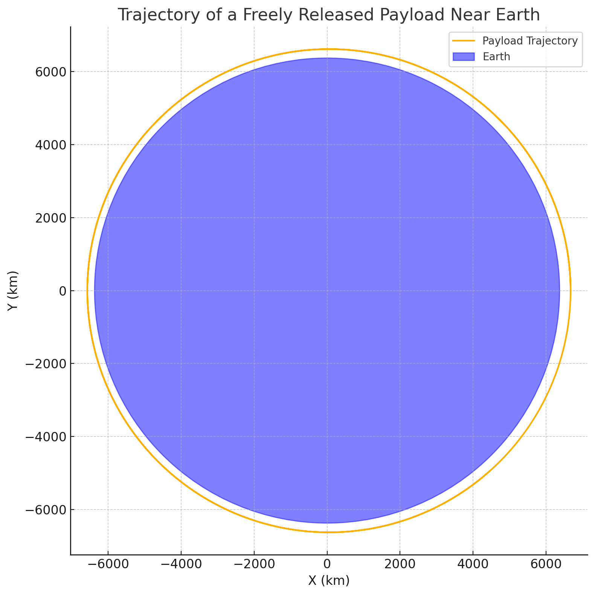
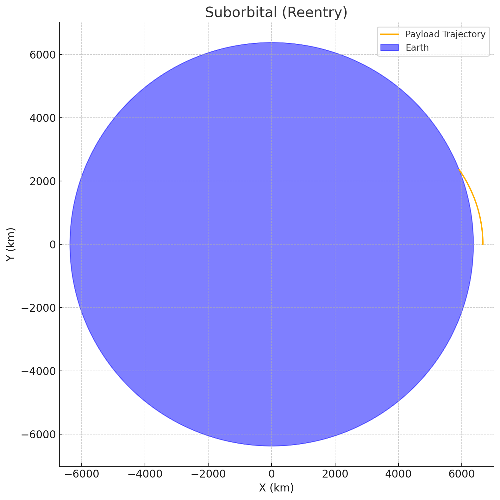
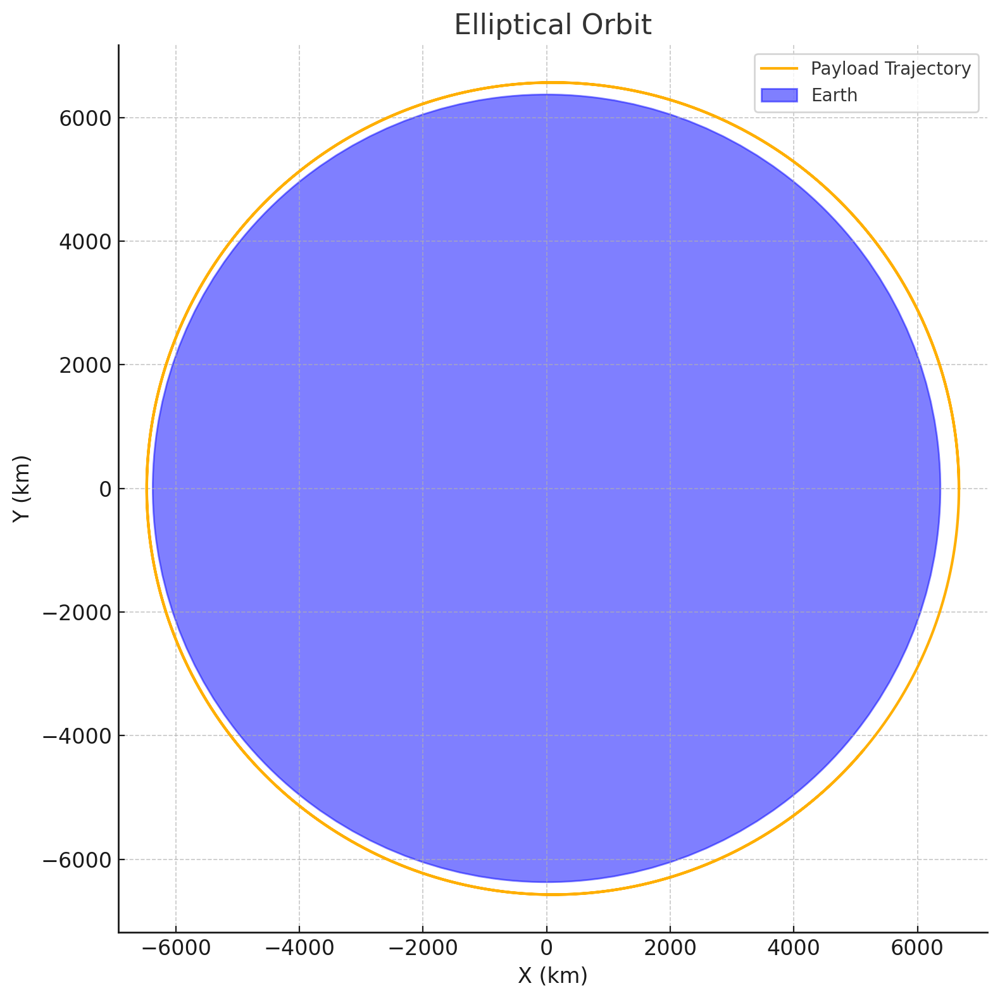
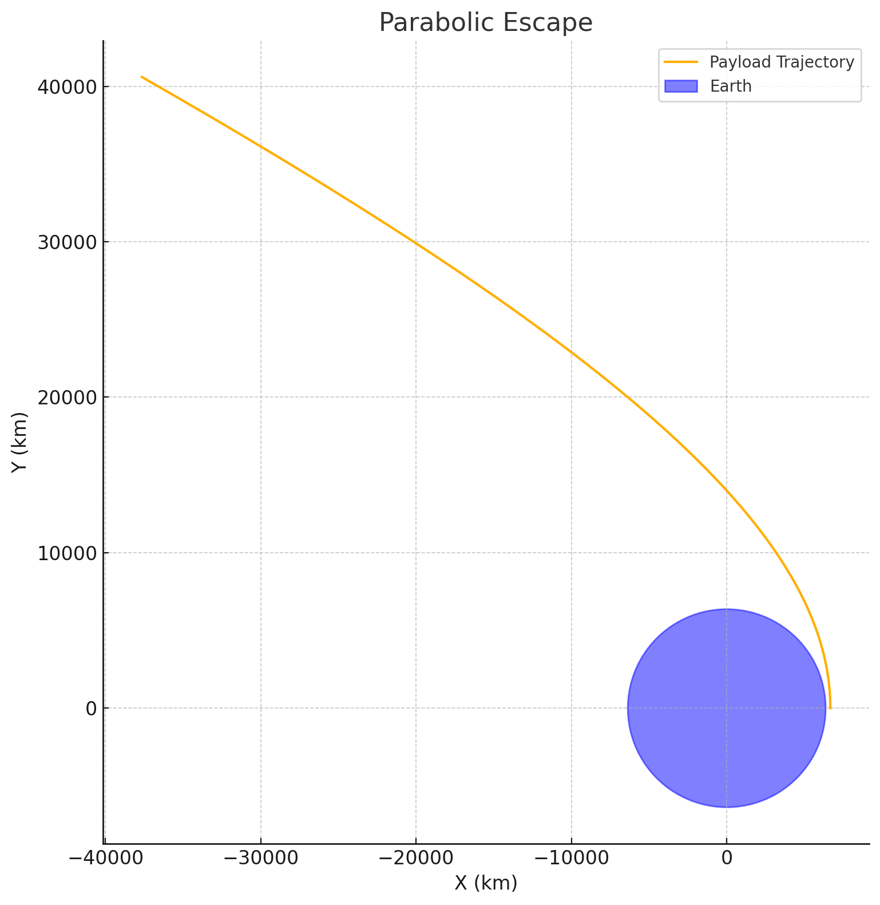
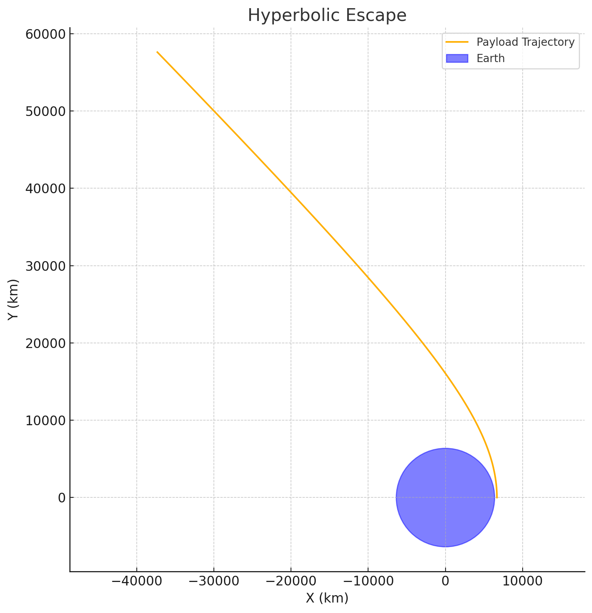

Problem 3
🚀 Trajectories of a Freely Released Payload Near Earth
📌 Motivation
When an object is released from a moving rocket near Earth, its trajectory is governed by initial velocity, release angle, altitude, and the gravitational pull of Earth. This creates a spectrum of possible paths — elliptical, parabolic, or hyperbolic — depending on its energy and direction.
Understanding these trajectories is crucial for:
- Orbital insertion
- Satellite deployment
- Reentry planning
- Escape missions
🌍 Theoretical Background
🧲 Newton’s Law of Gravitation
Where:
- \( F \) is the gravitational force
- \( G = 6.67430 \times 10^{-11} \ \text{m}^3/\text{kg}/\text{s}^2 \)
- \( M \) is Earth’s mass
- \( m \) is the payload mass
- \( r \) is the distance from Earth's center
🔄 Equation of Motion (2D)
To simulate motion in a plane, we use Newton's Second Law and integrate position and velocity:
We use numerical methods like Euler or Runge-Kutta (RK4) to simulate the motion over time.
✨ Types of Trajectories
- Elliptical: Bound orbit (total mechanical energy < 0)
- Parabolic: Escape at exactly escape velocity (total energy = 0)
- Hyperbolic: Escape with excess velocity (total energy > 0)
The total specific energy:
🧪 Python Simulation Code
import numpy as np
import matplotlib.pyplot as plt
# Constants
G = 6.67430e-11
M = 5.972e24
R = 6.371e6 # Earth's radius in meters
# Initial conditions
altitude = 300e3 # 300 km above surface
r0 = np.array([R + altitude, 0]) # position vector
v0 = np.array([0, 7700]) # velocity vector (tangent speed near orbit)
# Time settings
dt = 1 # time step (s)
total_time = 10000 # seconds
steps = int(total_time / dt)
# Arrays to store trajectory
positions = []
velocities = []
r = r0.copy()
v = v0.copy()
for _ in range(steps):
# Record position
positions.append(r.copy())
# Calculate acceleration
distance = np.linalg.norm(r)
acc = -G * M * r / distance**3
# Update velocity and position (Euler method)
v += acc * dt
r += v * dt
# Stop if impact
if np.linalg.norm(r) <= R:
break
positions = np.array(positions)
# Plot trajectory
plt.figure(figsize=(8, 8))
plt.plot(positions[:,0]/1000, positions[:,1]/1000, label="Payload Trajectory")
earth = plt.Circle((0, 0), R/1000, color='blue', alpha=0.5, label="Earth")
plt.gca().add_patch(earth)
plt.xlabel("X (km)")
plt.ylabel("Y (km)")
plt.title("Trajectory of a Freely Released Payload Near Earth")
plt.axis("equal")
plt.grid(True)
plt.legend()
plt.show()
🔍 Example Scenarios
| Scenario | Initial Speed (m/s) | Resulting Trajectory |
|---|---|---|
| Below Orbital Speed (~7.5 km/s) | 6000 | Sub-orbital / Reentry |
| Circular Orbit | 7670 | Elliptical Orbit |
| Escape Velocity (~11.2 km/s) | 11200 | Parabolic Escape |
| Excess Velocity | 12000 | Hyperbolic Escape |
📊 Visual Interpretation
- If the velocity is too low, the payload returns to Earth.
- If it's just right, it stays in orbit.
- If too high, it escapes Earth’s gravity.
🛰️ Applications
- Satellite deployment: Achieving elliptical or circular orbit
- Space missions: Transfer orbits to Moon, Mars, etc.
- Reentry planning: Ensuring objects return predictably
- Planetary science: Studying how objects behave near planetary bodies





✅ Conclusion
Simulating payload trajectories near Earth highlights the beauty and complexity of celestial mechanics. Even slight changes in initial speed or angle drastically affect the path — making simulation tools and understanding physics absolutely vital for modern space missions.